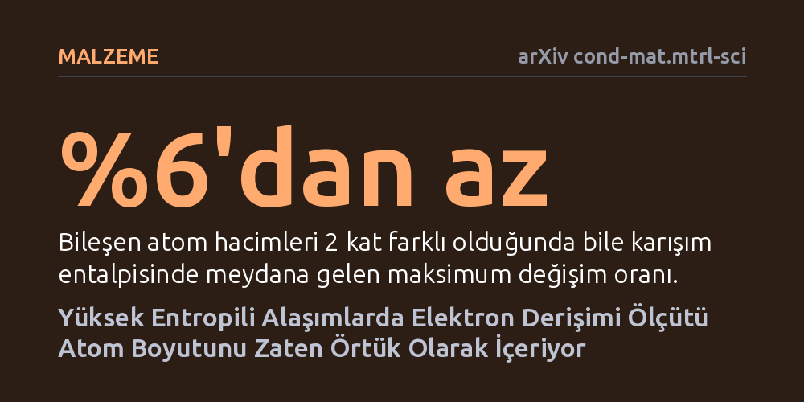

MALZEME · arXiv cond-mat.mtrl-sci · 2026-09-11
Yüksek entropili alaşımların kristal yapısını tahmin etmede kullanılan değerlik elektron derişiminin atom boyutundan bağımsız olup olmadığı araştırıldı. Atom hacmi ile elektron sayısı arasındaki ters ilişki nedeniyle bu ölçütün atom boyutunu zaten örtük olarak kodladığı ve boyut düzeltmesinin tahminleri geliştirmediği saptandı.
Yıllardır atom boyutunu hesaba katmadığı için eksik sanılan popüler bir alaşım kararlılık ölçütünün, periyodik tablodaki doğal eğilimler sayesinde atom boyutunu aslında zaten kapsadığını gösterir.

Geleneksel metalurjide bir veya iki ana metalin içine az miktarda katkı maddesi eklenerek alaşım üretilirken, yüksek entropili alaşımlar dört veya daha fazla elementi neredeyse eşit oranlarda bir araya getirir. Bu çok bileşenli karışımlar, aşırı sıcaklıklara dayanıklılık ve yüksek mekanik direnç gibi üstün özellikler sunar. Ancak bu elementler eritilip karıştırıldığında ortaya hangi kristal kafes yapısının (örneğin yüzey merkezli kübik FCC mi yoksa hacim merkezli kübik BCC mi) çıkacağını önceden tahmin etmek malzeme mühendisliğinin en kritik basamaklarından biridir.
Malzeme bilimciler bu faz kararlılığını tahmin etmek için onlarca yıldır 'değerlik elektron derişimi' (VEC) adını verdikleri basit bir formüle güvenmektedir. Bu formül, alaşımı oluşturan elementlerin değerlik elektron sayılarının bileşime göre ağırlıklı ortalamasını alır. Ne var ki formül atomların fiziksel büyüklüklerine dair hiçbir bilgi içermez. Klasik metalurjide atom boyut farklarının kristal yapıyı doğrudan belirlediği bilinirken, VEC ölçütünün boyut bilgisinden tamamen yoksun olmasına rağmen neden bu denli başarılı çalıştığı uzun süredir açıklanamayan bir bilmece olarak kalmıştı.
Dennis Boakye ve Chuang Deng, atom boyutunun VEC ölçütünde gerçekten eksik olup olmadığını anlamak amacıyla termodinamik temelli makroskopik atom modelini kullandı. Araştırmacılar, farklı atomlar bir araya geldiğinde ortaya çıkan karışım entalpisinin (sistemin kimyasal bağlanma enerjisindeki değişimin) atomik hacim farklılıklarına ne kadar duyarlı olduğunu matematiksel ve fiziksel olarak modelledi.
Ekip, teorik modelin ardından atomların yüzey alanı ile değerlik elektron sayıları arasındaki istatistiksel ilişkiyi mercek altına aldı ve boyutu açıkça hesaba katan düzeltilmiş bir elektron sayısı formülü türetti. Elde edilen bu kuramsal bağıntı, daha önce laboratuvarda sentezlenmiş ve faz yapıları deneysel olarak kesinleştirilmiş 265 farklı yüksek entropili alaşımdan oluşan kapsamlı bir veri kümesi üzerinde sınandı.
Çalışmanın hesaplamaları son derece çarpıcı bir fiziksel gerçeği gösterdi: Karışım entalpisi atom boyutuna karşı neredeyse tamamen duyarsızdı. Karışımı oluşturan elementlerin atomik hacimleri birbirinin iki katı kadar farklı olsa bile, entalpi değeri yüzde 6'dan daha az bir kayma gösteriyordu. Bu durum, atom boyutunun alaşım fazı üzerindeki tek olası etkisinin ancak elektron sayısıyla kuracağı etkileşim üzerinden gerçekleşebileceğini kanıtladı.
Ancak bu etkileşim incelendiğinde periyodik tablonun temel bir kuralı devreye girdi: Yüksek entropili alaşım yapımında kullanılan elementlerde atom hacmi ile değerlik elektron sayısı arasında çok güçlü bir ters orantı mevcuttu; yani elektron sayısı arttıkça atom hacmi küçülüyordu. Bu güçlü ters ilişki yüzünden, boyuta göre düzeltilmiş formül klasik VEC değerinin basit bir doğrusal ölçeklemesinden öteye geçemedi. İncelenen 265 alaşımın hiçbirinde boyut düzeltmesi tahmin başarısını artıramadı; çünkü klasik VEC ölçütü elementlerin doğası gereği atom boyutunu zaten kendi içinde örtük olarak barındırıyordu.
Elde edilen sonuçlar, malzeme bilimcilerin faz kararlılığını hesaplarken VEC kuralına ek boyut parametreleri ekleme zahmetine girmesine gerek olmadığını gösteriyor. Klasik VEC ölçütünün yıllardır süregelen başarısı bir tesadüf değil; elementlerin periyodik özelliklerinin sağladığı doğal bir geometrik dengenin sonucudur. Araştırmacılar ayrıca sistemdeki kimyasal entalpiyi belirleyen temel unsurun genellikle tek bir 'anahtar element' olduğunu ortaya koydu.
Bununla birlikte çalışma, VEC kuralının nerede başarısız olduğunu da net bir şekilde haritalandırdı. Formül, periyodik tablodaki genel kuralın dışına çıkan, yani hem atomik hacmi büyük hem de elektron bakımından zengin olan uç elementler içeren alaşımlarda yanılabiliyor. Gelecekte yeni alaşım tasarımları yapılırken bu istisnai element gruplarına dikkat edilmesi, kristal yapı tahminlerindeki beklenmedik sapmaları önleyecektir.